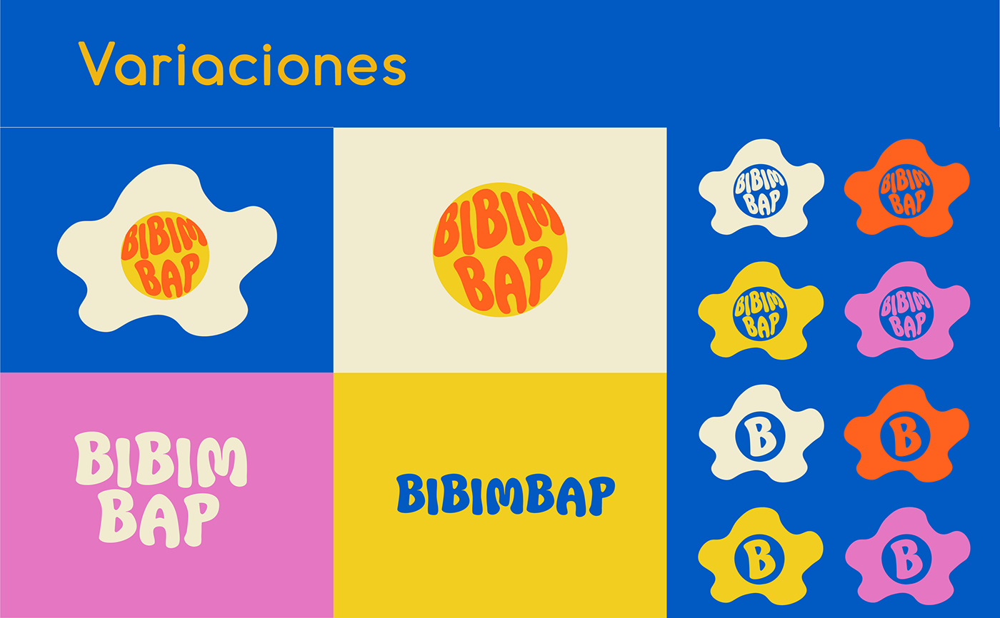

You actually want a recipe for this...??
Graphic by Cynthia Quispe Herrera
To be honest, Korean people commonly make bibimbap as a way to utilize all of the leftovers so you can really put anything in it, as long as you have gochujang sauce and seasame oil.